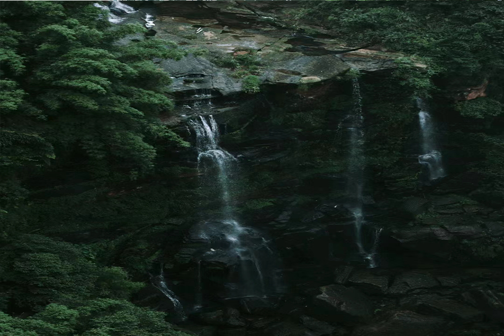

宜宾市境内竹资源丰富，竹子种植面积广阔，竹制品加工业发达。宜宾市的气候和土壤条件非常适合竹子的生长，因此竹子在这里生长茂盛，品种繁多。此外，宜宾市还拥有悠久的竹文化历史，传统的竹编工艺在当地得到了传承和发展。因此，宜宾市被誉为“中国竹都”，成为了中国竹文化的重要代表城市。
丰富的竹资源：宜宾市位于四川盆地南缘，具有温暖湿润的气候条件和肥沃的土壤，非常适合竹子生长。全市竹资源丰富，拥有多种竹子种类，其中包括一些珍稀竹种。
竹产业发展：宜宾市充分发挥竹资源优势，积极发展竹产业。竹子被用于制作家具、建材、食品、工艺品等各种产品，形成了较为完整的产业链。竹产业已成为宜宾市经济发展的重要支柱产业之一。
竹文化传承：宜宾市有着悠久的竹文化传统，民间流传着许多与竹子相关的诗词、故事和民间艺术。同时，宜宾市还举办了一系列竹文化活动，如竹文化节、竹文化艺术节等，弘扬竹文化，推动竹产业发展。

荣誉称号：由于在竹资源、竹产业和竹文化等方面的突出表现，宜宾市已被命名为“中国竹都”，成为全国首个获此荣誉的城市。
竹博会举办地：宜宾市成功举办多届国际竹产业发展大会（竹博会），吸引了国内外专家、企业和投资者关注。竹博会的举办不仅提升了宜宾市在竹产业领域的国际影响力，也进一步巩固了其作为中国竹都的地位。
宜宾市凭借其丰富的竹资源、发达的竹产业、深厚的竹文化底蕴以及在国际竹产业领域的地位，被誉为“中国竹都”。这一称号既彰显了宜宾市在竹资源开发利用方面的优势，也体现了其在弘扬和发展竹文化方面的贡献。